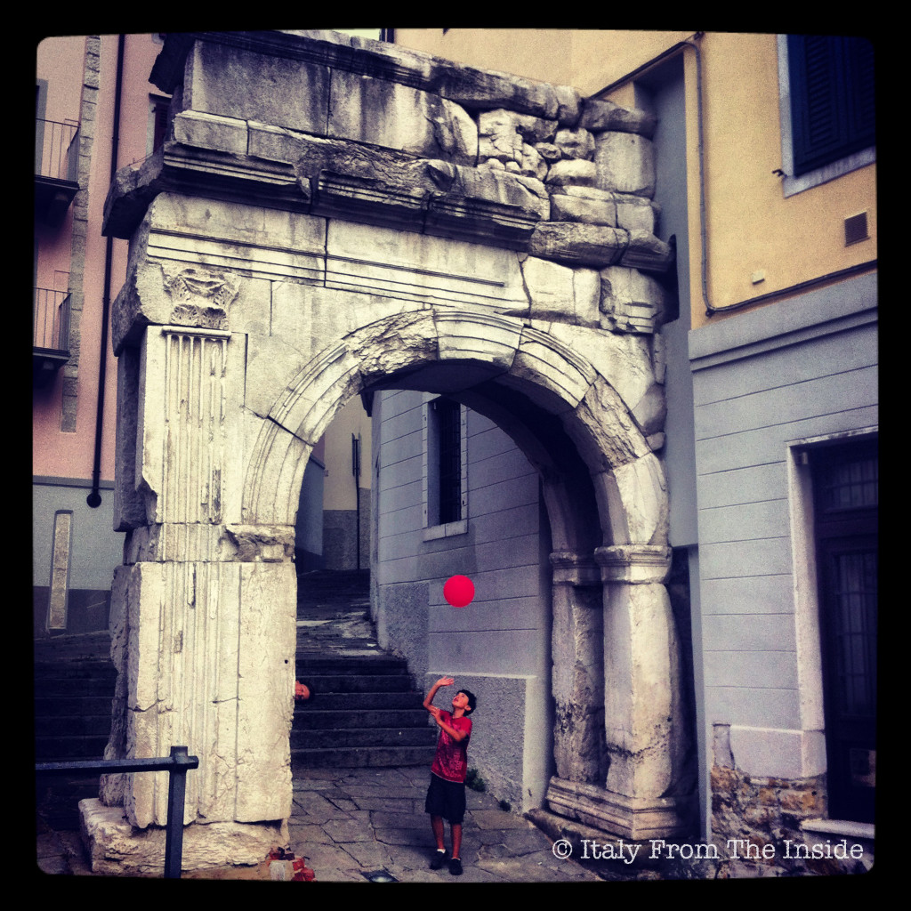

I've always had a passion for archaeology. I still remember when I attended an excavation camp in Basilicata with a program by a University different than mine, when the professor in charge of the camp kindly said to me: "Ma chi te l'ha fatto fare ?" (Who made you do this?). He was probably referring to the fact that I had blisters on my hands since I was digging all day long without finding anything. Not one thing. Nevertheless that experience still has a very fond place in my memories, and my love for archaeology hasn't changed at all. Therefore when I learned that the municipality of Triest made a video about how the city looked during the Roman Empire, I was just thrilled. I literally dragged my kids with me and while they couldn't care less about what they were watching (obviously), I was completely captivated. The video, whose title is "La citta' invisibile: frammenti di Trieste romana", is a digital reconstruction of Triest in Roman times. It is extremely well done and worth watching. This video also explains what the Arco di Riccardo (see photo above) used to be. For many years it was thought that it was a triumphal arch. However, now it is believed to simply be one of the gates leading to the heart of the city (the forum). After 2 millennia it is still there, still standing, and still beautiful.